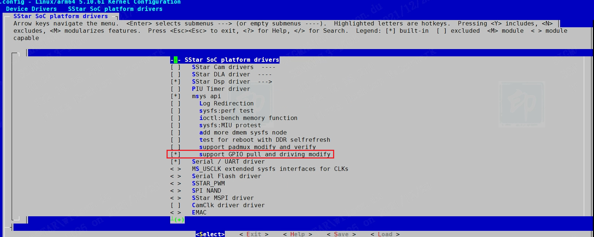

涉硬参数调整指南
1. EMAC涉硬参数调试步骤¶
1.1. 100M Ethernet¶
100M Ethernet共有31个档位可调：
| Level Name | Value |
|---|---|
| Level_0 | 0x1F |
| Level_1 | 0x1E |
| Level_2 | 0x1D |
| Level_3 | 0x1C |
| Level_4 | 0x1B |
| Level_5 | 0x1A |
| Level_6 | 0x19 |
| Level_7 | 0x18 |
| Level_8 | 0x17 |
| Level_9 | 0x16 |
| Level_10 | 0x15 |
| Level_11 | 0x14 |
| Level_12 | 0x13 |
| Level_13 | 0x12 |
| Level_14 | 0x11 |
| Level_15 | 0x10 |
| Level_16 | 0x00 (default) |
| Level_17 | 0x01 |
| Level_18 | 0x02 |
| Level_19 | 0x03 |
| Level_20 | 0x04 |
| Level_21 | 0x05 |
| Level_22 | 0x06 |
| Level_23 | 0x07 |
| Level_24 | 0x08 |
| Level_25 | 0x09 |
| Level_26 | 0x0A |
| Level_27 | 0x0B |
| Level_28 | 0x0C |
| Level_29 | 0x0D |
| Level_30 | 0x0E |
| Level_31 | 0x0F |
调节驱动能力等级：
1. # echo swing_100 Relative > /sys/devices/virtual/mstar/emac0/turndrv 2. swing : Value
命令中Relative为需要升档或者降档的相对档位数，Value为上表中Value那一栏。如要在当前档位的基础上调高5个档位，则：
1. # echo swing_100 0 > /sys/devices/virtual/mstar/emac0/turndrv //查看当前档位 2. swing : 0x00 3. # echo swing_100 +5 > /sys/devices/virtual/mstar/emac0/turndrv //上调5个档位 4. swing : 0x05
如要在当前档位的基础上调低5个档位，则：
1. # echo swing_100 0 > /sys/devices/virtual/mstar/emac0/turndrv //查看当前档位 2. swing : 0x05 3. # echo swing_100 -5 > /sys/devices/virtual/mstar/emac0/turndrv //下调5个档位 4. swing : 0x00
此外，也提供以绝对档位数为参数的设定方法：
1. # echo swing_100_st Absolute > /sys/devices/virtual/mstar/emac0/turndrv 2. swing : Value
其中Absolute为设定的档位值，取值范围为上表中Value那一栏，Value为当前的档位值，也对应上表中Value那一栏。如需将驱动能力设置为Level_31，则：
1. # echo swing_100_st 0x0F > /sys/devices/virtual/mstar/emac0/turndrv
2. GPIO驱动能力调整¶
2.1. 使用背景¶
由于 Linux GPIO lib 不支持 GPIO 上下拉及驱动能力的接口，所以导致我司的 GPIO Hal 层驱动缺少对 GPIO 上下拉和驱动能力设置的支持。然而在日常使用中，GPIO 的上下拉及驱动能力经常需要动态调整，所以增加上下拉及驱动能力设置 API 和用户层接口变得十分必要。
2.2. 内核接口¶
2.2.1. MDrv_GPIO_Pull_Up
-
目的
开启指定的 GPIO 上拉功能
-
语法
U8 MDrv_GPIO_Pull_Up(U8 u8IndexGPIO)
-
参数
Parameter Commemt u8IndexGPIO Gpio num -
返回值
Return Value Commemt 0 设置成功 1 引脚不支持上下拉设置或者输入参数错误
2.2.2. MDrv_GPIO_Pull_Down
-
目的
开启指定的 GPIO 下拉功能
-
语法
U8 MDrv_GPIO_Pull_Down(U8 u8IndexGPIO)
-
参数
Parameter Commemt u8IndexGPIO Gpio num -
返回值
Return Value Commemt 0 设置成功 1 引脚不支持上下拉设置或者输入参数错误
2.2.3. MDrv_GPIO_Pull_Off
-
目的
关闭指定的 GPIO 上/下拉功能，该 GPIO 切换至悬空态
-
语法
U8 MDrv_GPIO_Pull_Off(U8 u8IndexGPIO)
-
参数
Parameter Commemt u8IndexGPIO Gpio num -
返回值
Return Value Commemt 0 设置成功 1 引脚不支持上下拉设置或者输入参数错误
2.2.4. MDrv_GPIO_Pull_Status
-
目的
获取指定的 GPIO 上/下拉状态
-
语法
U8 MDrv_GPIO_Pull_Status(U8 u8IndexGPIO, U8* u8PullStatus)
-
参数
Parameter Commemt u8IndexGPIO Gpio num 8PullStatus Pull Status -
返回值
Return Value Commemt 0 获取成功 1 引脚不支持上下拉设置或者输入参数错误
2.2.5. MDrv_GPIO_Drv_Set
-
目的
设置指定的 GPIO 的驱动能力
-
语法
U8 MDrv_GPIO_Drv_Set(U8 u8IndexGPIO, U8 u8Level)
-
参数
Parameter Commemt u8IndexGPIO Gpio num u8Level 驱动能力等级，目前支持的驱动能力等级如下： Value Level 0 4mA 1 8mA 2 12mA 3 16mA -
返回值
Return Value Commemt 0 设置成功 1 引脚不支持驱动电流设置或者输入参数错误
2.2.6. MDrv_GPIO_Drv_Get
-
目的
设置指定的 GPIO 的驱动能力
-
语法
U8 MDrv_GPIO_Drv_Get(U8 u8IndexGPIO, U8* u8Level)
-
参数
Parameter Commemt u8IndexGPIO Gpio num u8Level 驱动能力等级，目前支持的驱动能力等级如下： Value Level 0 4mA 1 8mA 2 12mA 3 16mA -
返回值
Return Value Commemt 0 获取成功 1 引脚不支持驱动电流设置或者输入参数错误
2.3. 用户层调试方法¶
2.3.1. 开启功能
要使用用户层接口需要在Linux kernel的配置打开 CONFIG_MSYS_GPIO选项，该配置位于：
Device Drivers -->
SStar SoC platform drivers -->
msys api -->
support GPIO pull and driving modify

2.3.2. 使用功能
-
设置上/下拉之前需要将 GPIO 设置为输入状态，输出状态下上下拉是没办法测量的：
1. # cd /sys/class/gpio 2. # echo gpio_index > export 3. # echo in > gpio gpio_index/direction
查看当前的状态：
1. # cd /sys/class/mstar/msys 2. # echo gpio_index/gpio_name > gpio_pull 3. # cat gpio_pull
设置上拉、下拉或者悬空：
1. # cd sys/class/mstar/msys 2. # echo gpio_index/gpio_name down/up/off > gpio_pull
查看设置后的状态：
1. # cd sys/class/mstar/msys 2. # cat gpio_pull
以PAD_SD1_IO1为例，设置为输入：
1. # cd /sys/class/gpio 2. # echo 1 > export 3. # echo in > gpio1/direction
查看当前状态：
1. # cd sys/class/mstar/msys 2. # echo 1 > gpio_pull 3. # echo PAD_SD1_IO1 > gpio_pull //the same to above 4. # cat gpio_pull
设置为上拉：
1. # cd sys/class/mstar/msys 2. # echo 1 up > gpio_pull 3. # echo PAD_SD1_IO1 up > gpio_pull //the same to above
设置为下拉：
1. # cd sys/class/mstar/msys 2. # echo 1 down > gpio_pull 3. # echo PAD_SD1_IO1 down > gpio_pull //the same to above
设置为悬空：
1. # cd sys/class/mstar/msys 2. # echo 1 off > gpio_pull 3. # echo PAD_SD1_IO1 off > gpio_pull //the same to above
查看设置后的状态：
1. # cd sys/class/mstar/msys 2. # cat gpio_pull
-
设置驱动能力之前需要将 GPIO 设置为输出高电平状态方便测量：
1. # cd /sys/class/gpio 2. # echo gpio_index > export 3. # echo high > gpio gpio_index/direction
查看当前的驱动能力等级：
1. # cd sys/class/mstar/msys 2. # echo gpio_index/gpio_name > gpio_drive 3. # cat gpio_drive
调节驱动能力：
1. # cd sys/class/mstar/msys 2. # echo gpio_index/gpio_name level_num > gpio_drive
以PAD_SD1_IO1设置为8mA为例：
1. # cd /sys/class/gpio 2. # echo 1 > export 3. # echo high > gpio1 /direction 4. # cd sys/class/mstar/msys 5. # echo 1 1 > gpio_drive 6. # echo PAD_SD1_IO1 1 > gpio_drive //the same to above
每次执行echo指令后，可以通过cat同一个文件确定上一条echo命令的状态。GPIO Index 、GPIO Name和Level_Num可以参考 Software_Padmux_Table.xls
3. SD/EMMC驱动能力配置¶
3.1. 概述¶
芯片支持2组mmc设备，分别命名为SDIO和FCIE。SDIO和FCIE都支持SD2.0和4 bit mode的EMMC4.3，其中SDIO支持SD boot，FCIE支持EMMC 4 bit boot。SDIO有4种padmux mode，FCIE有2种padmux mode，具体可参考相关的GPIO PAD配置文档。
3.1.1. SD driving寄存器
SDIO在mode=1时，驱动能力一共有两档，由每个pin脚的bit7来决定，其具体设置见下表。
| SDIO PAD pin | 对应的信号线 | Bank | Offset |
|---|---|---|---|
| PAD_SD1_IO1 | Data[1] | 0x103E | 0x00 |
| PAD_SD1_IO0 | Data[0] | 0x103E | 0x01 |
| PAD_SD1_IO5 | CLOCK | 0x103E | 0x02 |
| PAD_SD1_IO4 | CMD | 0x103E | 0x03 |
| PAD_SD1_IO3 | Data[3] | 0x103E | 0x04 |
| PAD_SD1_IO2 | Data[2] | 0x103E | 0x05 |
bit位的值及其对应的驱动能力如下图，括号内的值为对应的十进制形式，后面会直接使用该值设定驱动能力。
| Bit7 | Driving(mA) |
|---|---|
| 0 (0) | 4 |
| 1 (1) | 8 |
例如：设定DATA0的driving为8mA的寄存器值为：
1. riu_w 0x103E 0x01 0x80
3.1.2. FCIE driving寄存器
FCIE只有一组pad，可以通过设置mode来决定接SD/EMMC卡，其驱动能力也是由每个pin脚的bit7来控制的。如下表：
| SDIO PAD pin | 对应的信号线 | Bank | Offset |
|---|---|---|---|
| PAD_SD_CLK | CLOCK | 0x103E | 0x0F |
| PAD_SD_CMD | CMD | 0x103E | 0x10 |
| PAD_SD_D0 | Data[0] | 0x103E | 0x11 |
| PAD_SD_D1 | Data[1] | 0x103E | 0x12 |
| PAD_SD_D2 | Data[2] | 0x103E | 0x13 |
| PAD_SD_D3 | Data[3] | 0x103E | 0x14 |
bit位的值及其对应的驱动能力如下图，括号内的值为对应的十进制形式，后面会直接使用该值设定驱动能力。
| Bit7 | Driving(mA) |
|---|---|
| 0 (0) | 4 |
| 1 (1) | 8 |
例如：设定DATA0的driving为8mA的寄存器值为：
1. riu_w 0x103E 0x11 0x80
3.2. SD驱动能力配置¶
SD driver有提供sysfs控pin脚driving能力，使用方法是：
1. cd /sys/devices/soc0/soc/soc:sdmmc 2. echo [slotNo] <signal> [level] > set_sdmmc_driving_control 3. # 设置[slotNo]的<signal>信号线的驱动能力为[level]。 4. # [slotNo] -选择操作的slot。 5. # <signal> -可以选择设置clk、cmd、data、all或空值（等同all）。 6. # [level] -driving能力挡位，取值范围0~1。
将sd slot0的所有信号脚的drving能力设置为1：
1. cd /sys/device/platform/soc/soc:sdmmc 2. echo 0 all 1 > set_sdmmc_driving_control
SD driver支持从dts中配置clk，cmd，和data信号线的drving能力，配置方法如下：
1. sdmmc {
2. compatible = "sstar, sdmmc";
3. slotnum = <1>;
4. …
5. slot-clk-driving = <1>,<0>,<0>;
6. slot-cmd-driving = <1>,<0>,<0>;
7. slot-data-driving = <1>,<0>,<0>;
8. …
9. }
如上图，这三项属性参数分别是配置clk线，cmd线和data四根线的drving能力。可以看到每项参数都有三个值，这三个值分别代表每个slot的驱动能力。
3.3. EMMC驱动能力配置¶
EMMC driver同样提供了sysfs控pin脚driving能力，位置在：/sys/devices/soc0/soc/soc:emmc。使用方法是：
1. echo [slotNo] <signal> [level] > eMMC_driving_control 2. # 设置[slotNo]的<signal>信号线的驱动能力为[level]。 3. # [slotNo] -选择操作的slot。 4. # <signal> -可以选择设置clk、cmd、data、all或空值（等同all）。 5. # [level] -driving能力挡位，取值范围0~1。
EMMC driver也同样支持从dts中配置clk，cmd和data信号线的driving能力，配置方法如下：
1. emmc {
2. compatible = " sstar_mci ";
3. slot-num = <1>;
4. …
5. clk-driving = <1>,<0>,<0>;
6. cmd-driving = <1>,<0>,<0>;
7. data-driving = <1>,<0>,<0>;
8. …
9. }
如上图，EMMC的参数解释和SD是一样的。
4. UART涉硬配置¶
4.1. 概述¶
芯片包含两组普通UART和一组FUART。都可以使用DMA模式，多组padmode可选择，驱动能力可调。
4.2. 特性与PADMODE说明¶
FUART相对于普通UART区别在于：
-
FUART可选择更高频率的source clk；
-
FUART多出CTS/RTS两根硬件流控引脚。
UART0有2组padmode可选，一般作为debug uart使用，UART1有4组padmode可选，FUART有4组4-wire mode和4组2-wire mode可选，即FUART可以不使用硬件流控，当成普通UART使用。之所以FUART有4-wire mode和2-wire mode，是因为TX/RX的pad与RTS/CTS其实是分开的，只不过是当我们设定4-wire mode的寄存器是同时把TX/RX和CTS/RTS的padmode都设置了。
4.3. 驱动能力说明¶
关于驱动能力，复用成UART引脚后，驱动能力仍然跟随pad属性，即驱动能力的配置设定同GPIO的设定相同，以UART1 padmode1为例：
| IP | Padmode | IP Pin | PAD_NAME | Bank | Offset[bit] | Driving |
| UART1 | 1 | UART1_RX | PAD_UART1_RX | 0x103E | 0x07[7] | Bit = 0 -> 4mA |
| Bit = 1 -> 8mA | ||||||
| UART1_TX | PAD_UART1_TX | 0x103E | 0x08[7] | Bit = 0 -> 4mA | ||
| Bit = 1 -> 8mA |
驱动能力的设定请参考2. GPIO驱动能力调整；或者使用riu_w命令调节。UART driver和dtsi节点当中没有提供调节方法。